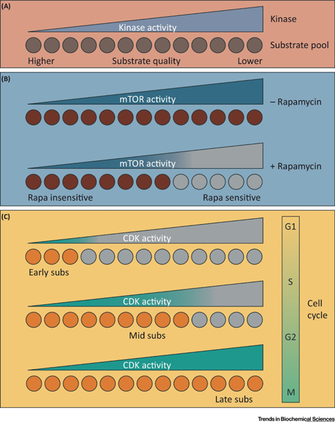

Keywords
Phosphorylation, Protein Kinase, Substrate Specificity, Docking, Scaffold, Multisite Phosphorylation, Signal Transduction
Reference
DOI: https://doi.org/10.1016/j.tibs.2018.02.009
Abstract
Protein phosphorylation is the most common reversible post-translational modification in eukaryotic cells. With over 500 kinases in humans, selective targeting of substrates is essential for proper signaling. Although kinases share a conserved catalytic domain, they achieve unique substrate specificity through diverse mechanisms.
This review summarizes recent advances in understanding how kinases select substrates, exploring recognition motifs, docking interactions, scaffold recruitment, and multisite phosphorylation. These processes ensure that kinases phosphorylate specific sites while avoiding off-target residues, shaping cellular responses to internal and external signals.
Notes
1. General Summary
- Protein kinases share highly conserved catalytic domains, but differ in regulation and substrate repertoire.
- Selective phosphorylation is crucial to avoid signaling errors — each kinase targets specific sites among vast proteomic options.
- Substrate selection involves multiple layers: motif recognition, docking, scaffolds, structural context, and multisite phosphorylation.
2. Mechanisms of Kinase Substrate Specificity
A. Recognition Motifs
- Kinase recognition motifs are short linear sequences (1–3 residues) near phosphorylation sites, but widely distributed across the proteome.
- Specificity often relies on motif variants, guiding kinases toward correct substrates.
- “Forbidden” residues may act as negative selectors to prevent off-target phosphorylation.
- Example: ZAP70, a tyrosine kinase, prefers acidic residues and avoids basic residues, acting as an electrostatic filter.
- Motif recognition is necessary but not sufficient for high fidelity — additional interactions are critical.
B. Docking Interactions (Direct)
- Docking motifs interact with non-catalytic surfaces of kinases, enhancing specificity and affinity.
- Example: MAPKs use DEF motifs (hydrophobic pocket near active site) and D-sites (C-lobe groove).
- Docking interactions allow for processive phosphorylation of multiple sites.
- Selective kinases, like GRKs (targeting GPCRs), use large interfaces for stringent specificity, coupling substrate binding with activation.
C. Adaptor and Scaffold Proteins (Indirect)
- Adaptors bind both kinase and substrate, recruiting them into proximity.
- Scaffolds organize kinases, substrates, and regulators into signaling hubs.
- Example: MAPK cascades rely on scaffolds to connect upstream and downstream kinases.
- Scaffolds also control localization and conformationally prime substrates.
D. Structural and Contextual Effects
- Phosphorylation sites often reside in flexible/disordered regions, but secondary/tertiary structure can influence kinase recognition.
- PKC isozymes recognize substrates based on “structural consensus”, selecting residues according to their folded conformation.
- Highlights the complexity of substrate selection beyond linear motifs — 3D context matters.
3. Multisite Phosphorylation: Integration, Amplification, and Control
- Hierarchical phosphorylation (prime-dependent) regulates signal integration and pathway crosstalk.
- Example: GSK3β requires prior phosphorylation (priming) for substrate recognition.
- Multisite phosphorylation allows fine-tuned responses, integrating multiple signals.
- EGFR prefers a pTyr at +1 to integrate with Src-mediated signaling via SHC.
- Prime-dependent sites create binding motifs for SH2, polobox domains, and adaptors like Cks1, MOB1, facilitating downstream signaling.
- Nonprocessive multisite phosphorylation can lead to switch-like behaviors, regulating signal strength and duration.
- Example: Elk-1 phosphorylation by ERK shows variable rates at different sites, shaping transcriptional outcomes.
4. Differential Substrate Quality and Functional Consequences
- Substrates vary in recognition quality, influencing phosphorylation efficiency and inhibitor sensitivity.
- mTOR complexes (mTORC1 vs. mTORC2) show distinct substrate preferences based on adaptor interactions.
- High- vs. low-quality sites explain differential inhibitor sensitivity (e.g., rapamycin affects low-quality sites).
- CDKs adjust specificity via cyclin partners to regulate cell cycle:
- Early-phase cyclins target high-affinity motifs.
- Late-phase substrates require higher CDK activity.
- Substrate quality shapes temporal and functional outputs of kinase signaling — a crucial aspect for therapeutic targeting.
RD’s Thoughts and Learnings
- Still can’t love this paper, but its organization of substrate specificity mechanisms is solid.
- Like the candid line: “it is self-evident that the phosphorylated amino acid residue must interact at least transiently with the active site of the kinase.” — so true and rarely stated so clearly!
- The distinction between motif recognition, docking, and scaffold-based recruitment is important for understanding kinase complexity.
- Fascinated by structural consensus models (PKC) — residue selection based on folded substrate structure rather than linear motif is game-changing.
- Like the figure idea — connecting all mechanisms into a unified targeting model.
- Protein-modifying enzymes like kinases and ligases form a conceptual class — useful framework.
- Thinking about phosphorylation like “modification rules” imposed by both sequence and structure is powerful — could help in studying complex post-translational codes.
Take-home Messages
- Kinase substrate targeting involves multiple integrated mechanisms:
- Recognition motifs,
- Docking outside catalytic cleft,
- Adaptor and scaffold-mediated recruitment,
- Structural/3D context,
- Multisite phosphorylation for integration and control.
- Substrate specificity regulates pathway fidelity, preventing erroneous phosphorylation in dense signaling networks.
- Multisite phosphorylation allows dynamic regulation and signal amplification/attenuation.
- Substrate quality impacts response sensitivity and inhibitor effects — relevant for targeted therapies.
- Although common kinase motifs are shared, layers of control ensure precise signaling outcomes — an elegant but complex system.
- RD still doesn’t love this paper, but respects its contribution to clarifying how kinases achieve specificity in the signaling maze.

Figure: a pic from the paper for clarifying. (Click to enlarge)
So true: “it is self-evident that the phosphorylated amino acid residue must interact at least transiently with the active site of the kinase.” — RD’s favorite line!✨